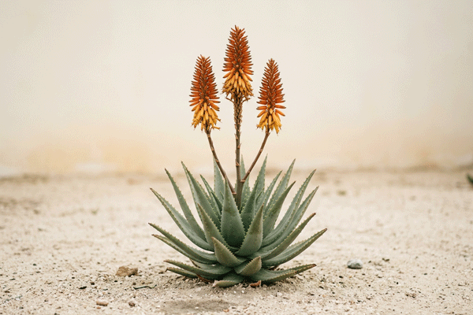
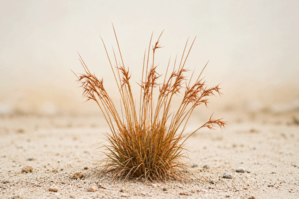
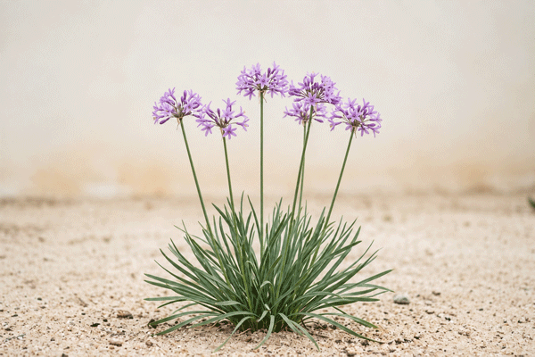
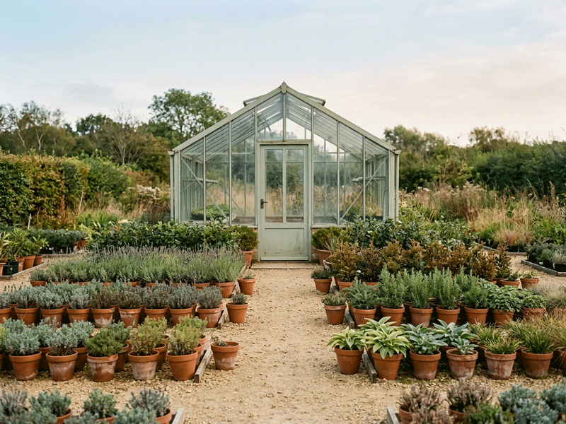

Aloe
Thick grey-green leaves and bright orange flower spikes in winter. Needs full sun and very little water.
Indigenous grasses, aloes and bulbs, raised from seed on the outskirts of Bloemfontein.
Every plant we sell has grown through at least one Highveld winter in our open beds, so it is ready for frost, wind and dry months before it reaches your garden.
See this season's plantsThree plants that our visitors ask about most often this time of the year.

Thick grey-green leaves and bright orange flower spikes in winter. Needs full sun and very little water.

The grass that gives the nursery its name. Its seed heads turn rusty red in late summer. Needs full sun.

NewRound clusters of small mauve flowers from spring to autumn. Needs sun or light shade and regular water.
Plants settle in best when they go into the ground at the right time of the year.
| Plant | Type | Best time to plant | Water |
|---|---|---|---|
| Aloe | Succulent | Spring | Very little |
| Red grass | Grass | Little | |
| Wild garlic | Bulb | Autumn | Regular |
| Pineapple lily | Bulb | Late winter | Regular |

The nursery lies on a gravel road ten minutes outside Bloemfontein. Our open beds are laid out by plant type, so you can see how each plant looks after a full year in the ground before you choose one for your own garden.
We grow:
Send your questions to plants@rooigras.co.za. Read more about red grass on PlantZAfrica (opens in a new tab).